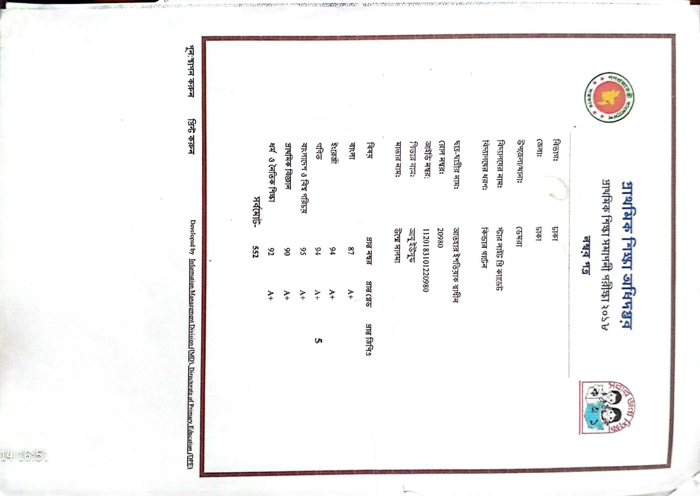
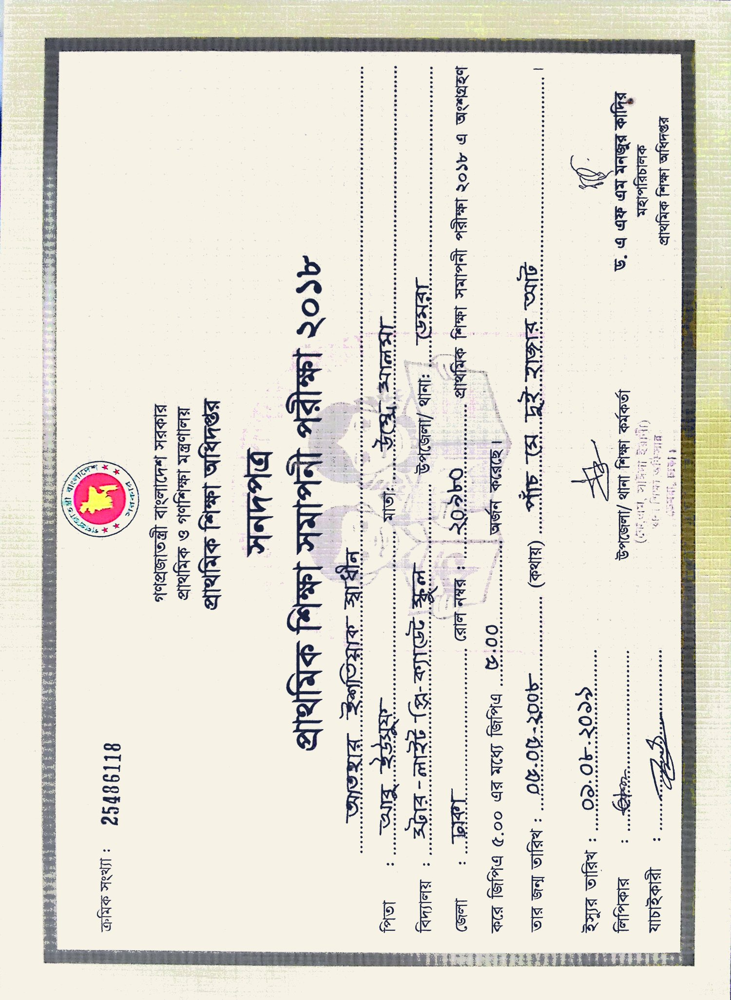
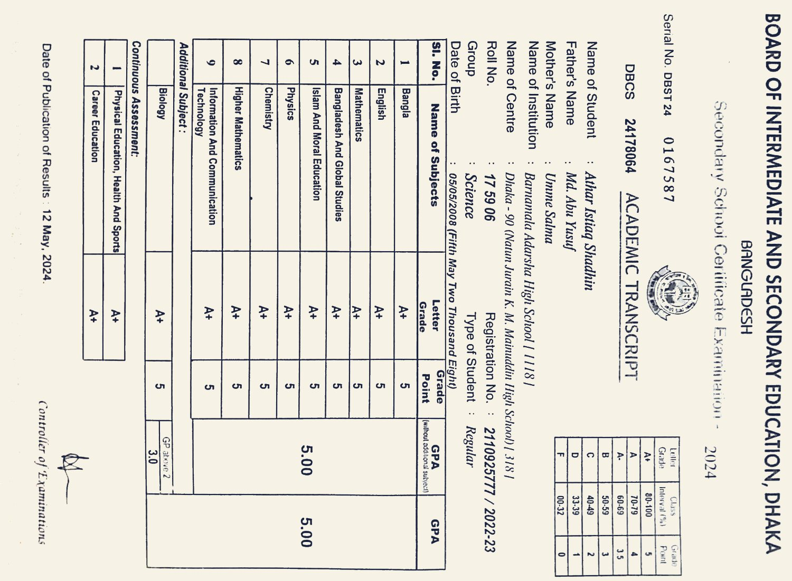
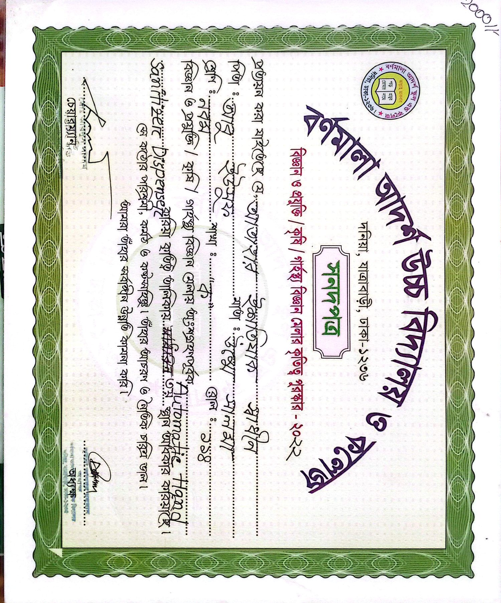
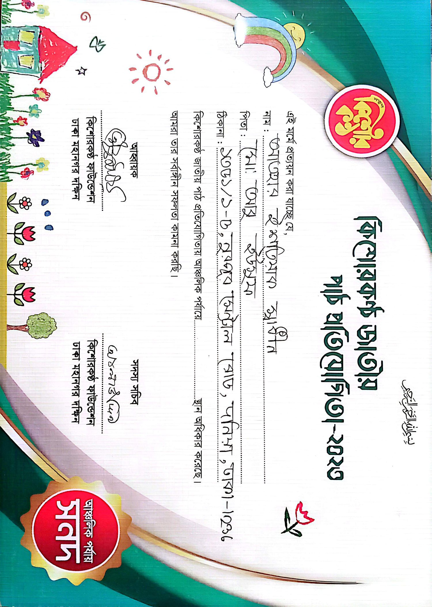
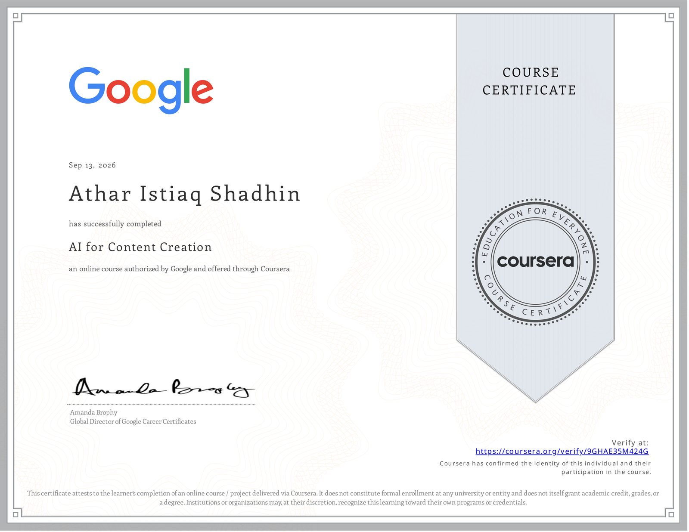
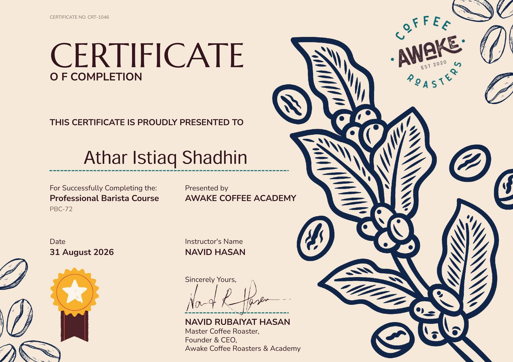
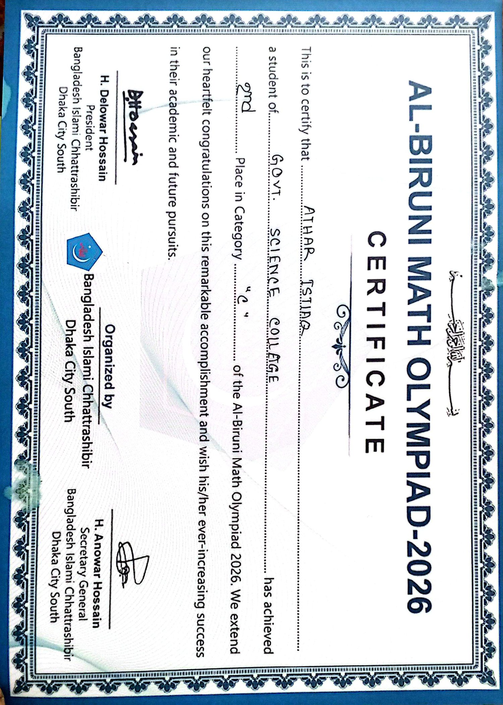
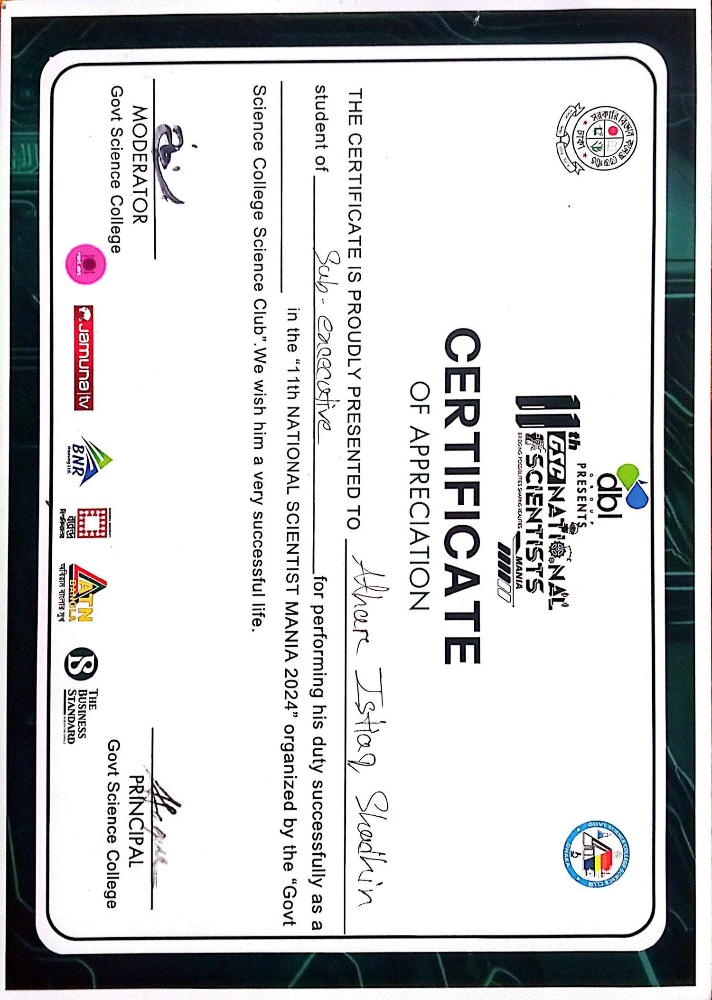

⚡
AI PROJECTS
AI Content Workflow
A repeatable AI-assisted pipeline: brief → research → draft → review → publish.
AISHEETS
DHAKA, BANGLADESH — EST. 2008
AI × TECHNOLOGY × MARKETING × CREATIVITY
“If everyone goes West, I take the road East.”
I've never liked being confined to one thing. I explore AI, technology, marketing, writing, business, gaming, travel — and whatever else makes me curious.
I'M
EXPLORE MY WORLD
THERE IS NO SINGLE ROUTE THROUGH MY STORY — PICK A DIRECTION
◉ HOVER THE NODES — CLICK TO TRAVEL
// 02 — ABOUT
Who I Am
I'm Athar — born in Dhaka on 05 May 2008. I don't like one-liner introductions, because I don't actually fit on one line.
From a young age I was the kid who got distracted by too many good ideas. I explored conventional career ideas the way most of us do — because that's what everyone talks about. Then something shifted. The more I dug into technology, AI, business, digital marketing, writing and content, the clearer it became: my energy doesn't live in one box.
Today I'm an unconventional student — HSC 2026 finished at Government Science College, exams done and results on their way, while I keep building skills outside the classroom in parallel: AI workflows, marketing experiments, content, and small projects that teach me things no syllabus will. My direction right now is higher education abroad. My long-term direction is simple to say and hard to do: build something of my own.
What Makes Me Different
Most people pick a lane early and commit. I read the whole map first — then I decide where to drive. Not because I'm lost. Because the interesting routes aren't advertised.
I don't wait until I feel "ready". I start the workflow, run the campaign test, write the page, break the thing — and let the failure teach me faster than any lecture.
When the obvious choice is crowded, I get curious about the empty road. Not for rebellion — because independent thinking usually lives where there's less competition.
My Personality
My Interests
My Philosophy
“I don't want to be defined by a single label. I'm a student, a gamer, a writer, an AI explorer — and I refuse to pick just one.”— THE LABEL PROBLEM
“I don't want one predefined path. I want to explore, build and learn — and let the path reveal itself as I go.”— THE ROAD EAST
// THE OTHER DIRECTION
“…I become curious about the road nobody is taking.” I'm not one thing. I'm a connected system — click an identity to see the human inside it.
Government Science College, HSC 2026. The exams are done and the result is on its way — I am waiting on the board the way I wait on a server deploy. School is where I sharpened debate, math and discipline, not just grades.
// 03 — JOURNEY
Not a straight line. A trajectory — a curious kid from Dhaka slowly realizing he doesn't want one destination. Scroll to watch it draw itself.
2008
Born in Dhaka on 05 May 2008. The original startup — one founder, zero funding, infinite curiosity.
EARLY YEARS
The phase where everything is a question. Why does this work? What's on the other side? I explored more things than most kids my age — and got distracted by all of them.
SCHOOL YEARS
Starlight Pre-Cadet, then Barnamala Adarsha — PSC in 2018, JSC completed, SSC in 2024. Solid academics in most subjects, plus a growing list of interests that the timetable didn't cover.
TEEN YEARS
Computers stopped being a toy and became a world. Gaming taught me design. Content taught me voice. Business ideas stopped being daydreams and started being experiments.
2024
SSC milestone cleared. From here I stopped learning "subjects" and started learning "systems" — how software, data and the internet actually run.
2025–2026
The Google AI Professional Certificate — all 8 courses: fundamentals, brainstorming, writing, content creation, data analysis, app building, app deployment. This is where my direction sharpened.
2026
Foundations of Digital Marketing and E-commerce (Google/Coursera). The other half of the picture: even the best product needs a story that reaches people.
NOW
Projects, automations, content experiments, this portfolio system. I'm not waiting for permission — I build, measure, break, rebuild.
TODAY
HSC 2026 done at Government Science College — exams finished, result pending, and the gold is the expectation: another 5.00 with 90%+ marks. Now it runs 50% admission preparation, 50% building and learning. 18 years old, 4 years away from the "before 30" deadline — exactly on schedule.
NEXT →
Higher education abroad. International exposure. Then — finally — building something of my own. The road East continues.
// 04 — EDUCATION
The formal chapter. Three schools, four milestones, and one very unconventional attendance story.
Academic Timeline — Schools
Academic Performance
90%+ in most subjects across my academic record — math, science, ICT and English have been my strongest territory. Consistency without a single perfect score: exactly like the rest of me.
KNOWN EXCEPTIONS: BANGLA & BIOLOGY — the subjects that fought back. No exact marks published here; what matters is the pattern, not a number.
Milestones
Official Records — the paper trail





The Unconventional Student
Yes — that number is a joke I tell about myself. But the version behind it is real: I wasn't interested in learning only by sitting inside a classroom. I often preferred exploring things independently — reading, building, experimenting — over clocking hours. Whether that's a flaw or a feature, my results in most subjects have so far voted: feature.
// TIMESTAMPS
// 05 — WORK
SKILLS · LANGUAGES · EXPERIENCE · PROJECTS · CERTIFICATIONS · ACHIEVEMENTS · VOLUNTEERING
I treat AI as a co-worker, not a magic trick — prompting, evaluating outputs, and designing workflows around it.
From the Foundations of Digital Marketing & E-commerce course — plus my own live experiments.
Numbers are just stories that haven't found their chart yet. Self-rated practice intensity:
Where I live when I'm not sleeping — from web development fundamentals (HTML, CSS, JavaScript) all the way up to the machine in front of you. Ask me anything.
AI for Writing and Communicating trained the engine — taste is what I bring.
If I do it twice by hand, it's a candidate for a workflow.
Microsoft 365 Office — fully completed (100%). The unglamorous foundation that makes everything look professional.
Yes, this is in the skill lab. Professional Barista Course — Awake Coffee Academy, 2026.
// 06 — LANGUAGES
Five languages, one pattern: I start with curiosity and follow it until it becomes usable.
Mock-test result: 7.5 / 9 MOCK TEST — NOT AN OFFICIAL IELTS SCORE
The language of home — Dhaka accent, full volume.
Comfortable in real conversations; still sharpening the edges.
Understands and holds a conversation — reading is the next rep.
The side quest. Slow, deliberate, and already interesting.
// 07 — INDEPENDENT EXPERIENCE
I have no formal full-time employment — and I won't pretend otherwise. What I do have is real, repeatable, independent work.
Teaching younger students — math and science basics. Teaching is the fastest way to find out what you actually understand and what you're just reciting.
Revising, proofreading and reformatting books and documents for people and small local operations. Patience, attention to detail, and deadline management under quiet pressure.
Real customer conversations: explaining options, handling objections, closing. Street-level marketing — learned before I ever studied the theory.
Small independent jobs — practical work that needed doing, solved with initiative. No title, no logo on the door, real lessons every single time.
Reliability beats talent at 17. Communication is a practiced skill, not a trait. And customers forgive almost anything except not being taken seriously.
My resume doesn't have company logos — yet. But every line above is something I actually did, for real people, with real constraints. The rest is coming.
// 08 — PROJECTS
A growing gallery of what I've built — and what's next. Click any card for the full breakdown — problem, idea, tools, process, result, status.
A repeatable AI-assisted pipeline: brief → research → draft → review → publish.
An interactive digital universe — this site. Real navigation, canvas systems, real data.
Small honest tests: content angles, hooks, posting rhythm — then reading the numbers.
Turning raw sheets into readable visuals, with AI drafting the analysis and me verifying it.
Chain the 5-step task I kept doing by hand into one trigger: collect → process → file → notify.
Short stories and essays about being an unconventional student in a conventional system.
Concept: an AI-assisted study companion for BD students — straight from the app courses.
// 09 — CERTIFICATIONS
Real, verified certificates. Every image opens in a full viewer; every verify link goes to the original source. Nothing here is invented.
GOOGLE · DELIVERED VIA COURSERA
All 8 courses completed — the full certificate. Course dates: Sep 11–13, 2026. Professional certificate issued Sep 13, 2026.




NOTE: AI for Research and Insights, AI for Data Analysis and AI for App Building are included in the 8-course Google AI Professional Certificate above. I haven't listed separate verify links for them — only links that actually exist go in this vault.
Extra-Curricular Activities
GLOBAL AI STUDENT CHALLENGE
2026
YOUTH TECHNOLOGY SUMMIT
2026
INTERNATIONAL DEBATE CIRCUIT
2025
INTENSIVE ML PROGRAM
2026
GLOBAL MARKETING CASE COMPETITION
2026
LEADERSHIP FORUM
2025
48-HOUR BUILD EVENT
2025
Beyond the classroom — competitions, bootcamps and forums. Tap any card for the full story: what the event is, what I did, and where it connects on this site.
// 10 — HALL OF ACHIEVEMENTS
The recognitions I'm proud of — the ones with names on the left, the ones with numbers on the right.
2026 national math olympiad — official certificate in the vault.
Competed in debate and finished as runner-up — the podium's best learning experience.
Several academic recognitions across school years, in the subjects where I push hardest.
15+ events since 2024 — sub-executive, volunteer, organizer, evaluator.
National writing competition, cleared with 90%.
Every course of the professional certificate, completed and verified.
Top of the scale at PSC (2018) and again at SSC (2024).
National competitions, board results, school positions, training certificates.
Full course completed: Word, Excel, PowerPoint.
// 11 — VOLUNTEERING & LEADERSHIP
Five events, five different hats — volunteer, organizer, evaluator. Presented exactly as they happened.
Served as sub-executive at the 11th National Scientist Mania 2024, organized by the Govt. Science College Science Club — the operations side of one of the country's biggest student science events.
Volunteer for the Clarion Call Math Olympiad 2025 — with a formal Certificate of Appreciation.
Volunteer and event involvement at the 12th Youth Summit 2024.
Part of Pillab Cultural-related activities — the side of my life that school forms never capture.
Examiner / evaluator involvement at Scholar Forum Dhaka — judging others' work teaches you the standard.
Events are where you learn logistics, communication and humility at the same time. Also: it looks good to be known for giving, not just taking.
// 12 — LIFE OUTSIDE THE CV
The human behind the portfolio. No tournament wins, no rankings, no flexes — just the things that make the building better.
Where I learned team coordination, fast decisions, and why good design matters.
MOBILE · TACTICAL
RANK · DIAMOND
MOBILE · FPS
RANK · PRO II
MOBILE · MOBA
RANK · LEGEND
MOBILE · SHOOTER
RANK · PLATINUM
PC · ACTION
STORY · CLEARED
PC · RPG
STORY + DLC · CLEARED
THE LADDERS ARE REAL — AND THE TIER IN EACH TILE IS MINE. TAP A TILE for the game, its full rank system, and my achievement.
Home base: Dhaka. The yellow pin is where I am. The others are where I'm going.
SO FAR: MY WORLD CENTERS ON DHAKA AND WHAT'S AROUND IT. THE OTHER PINS ARE PLACES I WANT TO STAND IN — study abroad will make some of them official.
My input channel. The shelf is what I read and plan to read — hover to pull a book out.
A certified skill and a daily ritual. Click the cup for notes.
I learned espresso basics, milk texturing and bean profiling in the Professional Barista Course at Awake Coffee Academy.
NOTE 01 / 04
CERTIFIED // PROFESSIONAL BARISTA COURSE — AWAKE COFFEE ACADEMY, 2026.
A floating ecosystem of the tech and ideas orbiting my daily work.
Currently curious about — the list that keeps me up at night.
// 13 — CURRENTLY
A live dashboard. Right now my energy splits exactly in half — and it's a deliberate split, not a lack of focus.
50% of my energy. HSC result incoming, then application research, document prep, and the applications themselves.
Building from a mock-test baseline of 7.5 toward an official test. German is the side quest.
Turning the 8-course certificate into projects — workflows, app concepts, automation.
Small live experiments on my own content — hooks, rhythm, what the numbers actually say.
This portfolio system + a data dashboard template + the AI app concept.
Whatever sparks curiosity this month. The list is always longer than the calendar.
“The biggest Bangladeshi dream is to leave Bangladesh.”
— ANAS SIR
// 14 — VISION
“I don't have one destination.
I have a direction.”
Higher education abroad. International exposure. Then — finally — building something of my own, and being financially independent before 30. I don't force a single career onto myself. I keep the options open and the standards high, and I let the direction sharpen as I go.
Study Abroad — Possible Directions
These are directions, not commitments. The plan is the plan — the destination stays flexible.
Before 30 — The Roadmap
Future Plans
Collect the HSC result and keep the golden streak. Get the admission documents right. Make the study-abroad application land.
International exposure — study, travel, meet people whose questions are different from mine.
Financial independence before 30. Then the real project: something of my own.
What I Want To Build
Technology with a soul — the kind of thing you open without thinking. Maybe AI-powered, maybe local-first, maybe both.
Not "add a chatbot" energy — products where AI is the architecture, built by someone who actually understands how to ask machines questions.
The endgame isn't a job title. It's a company, a product, a name — mine. The road East leads somewhere, and I'm going to find out where.
// 15 — CONTACT
Collaborations, opportunities, or just a good conversation about AI, markets, or the road East — my inbox is open.
My profiles — every button opens my page directly.
fFACEBOOKAt Har Ist Iaq↗ ◈INSTAGRAM@at_har_ist_iaq2.0↗Have an idea that needs curiosity + execution? Or a seat at the table for someone who takes the road East? We should talk.